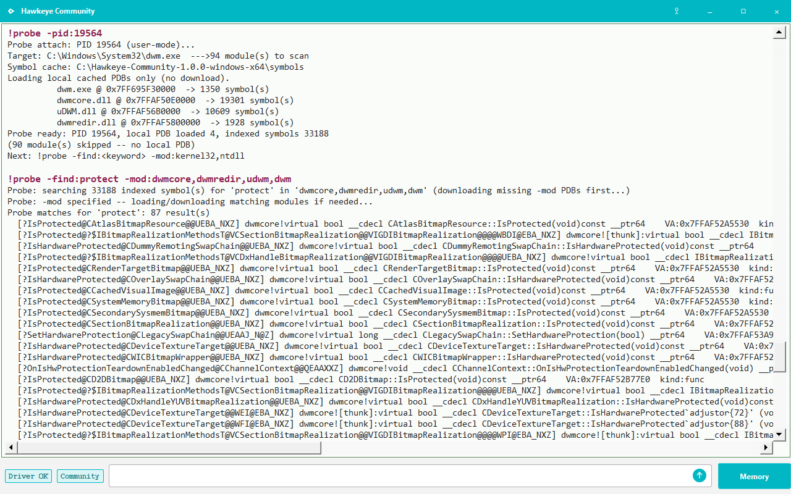
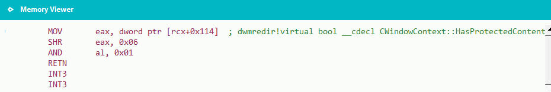
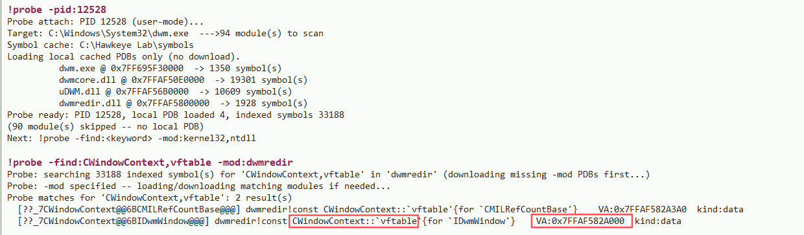
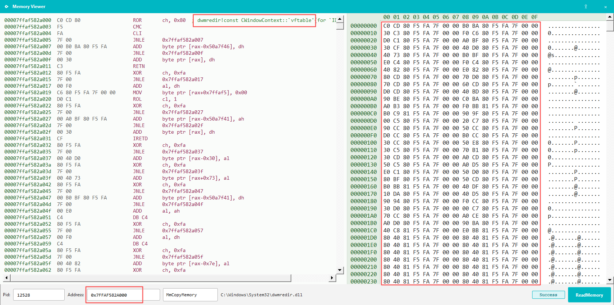
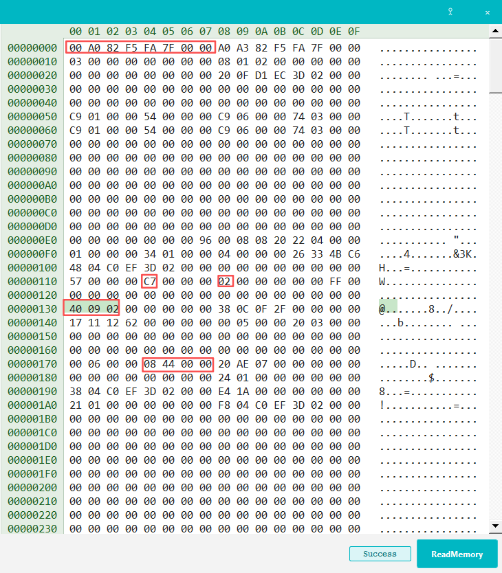

Hidden windows & anti-capture seriesTools: IDA 路 CE 路 Hawkeye Community 路 Cursor MCP
1. Background & series
SetWindowDisplayAffinity (typically with WDA_EXCLUDEFROMCAPTURE)
is a well-known way to keep a window visible on the desktop while excluding it from
most screen-capture and recording APIs.
This series has three parts. This article is part 1:
Part 1 (this page): SetWindowDisplayAffinity ��?mechanism & detection
Part 2: Visual-layer hiding ��?mechanism & detection
Part 3: BitBlt-style “super screenshot” approach
2. win32k chain
The user-mode API enters the kernel at
win32kfull!NtUserSetWindowDisplayAffinity; core logic lives in
SetDisplayAffinity. Simplified flow:
DwmAsyncUpdateSprite ultimately delivers an LPC message to the
dwm.exe process. Aside from updating the SysDispAffinity
property on the window (tagWND), other kernel-side changes are relatively few.
Property atom indices also shift between Windows versions, so detecting hidden windows
from kernel state alone tends to be less stable and less portable.
Study of dwmcore.dll shows separate paths for capture and direct display,
corresponding to CCaptureRenderTarget and CDDisplayRenderTarget
respectively. With further observation, the split is clear: for anti-capture, the
dwm.exe process owns the full logic; the kernel plays a limited role.
3. DWM leads
Whether a window is hidden from capture should, in principle, show up in DWM
CCaptureRenderTarget composed output.
dwm.exe loads many modules; our primary suspects are
dwm.exe, dwmcore.dll, dwmredir.dll, and
uDWM.dll (we search these first below) — the names all carry
dwm.
In Hawkeye Community, attach to dwm.exe with
!probe -pid:<dwm_pid>, then search for protect across the
four modules below:
!probe -find:protect -mod:dwmcore,dwmredir,udwm,dwm

Figure 1. !probe -find:protect ��?many protection-related symbols; below we focus on CWindowContext.
Strongest candidates in dwmredir ��?two functions tied to window content:
CWindowContext::HasProtectedContent
CWindowContext::NotifyProtectionChange
The names are explicit: test whether window content is protected, and notify the
composition pipeline when protection changes. DWM also exposes many
IsProtected / SetHardwareProtection symbols worth
following separately.
4. What HasProtectedContent does
Disassembly of dwmredir!CWindowContext::HasProtectedContent is straightforward:

Figure 2. Load [rcx+0x114], SHR 6, AND 1 ��?i.e. test bit 6 (0x40) of that DWORD.
So CWindowContext carries a flag DWORD at offset +0x114;
bit 6 marks protected content (consistent with anti-capture semantics).
When locating CWindowContext instances, note the class has
two vftables. Use the one for IDwmWindow
(example from our test machine below):

Figure 3. !probe -find:CWindowContext,vftable -mod:dwmredir ��?locate the IDwmWindow vftable.

Figure 4. Vftable lives in dwmredir.dll ��?use it to scan DWM heap objects.5. Memory validation
Experiment: call SetWindowDisplayAffinity(WDA_EXCLUDEFROMCAPTURE) on a window,
then search for that HWND value in dwm.exe with Cheat Engine to land on the
matching CWindowContext object.

Figure 5. Layout check: first 8 bytes = vftable; at +0x114, value 0xC7 has bit 6 (0x40) set; cross-check HWND and owning PID.
Field
Example
Notes
vftable
0x00007FFAF582A000
CWindowContext (IDwmWindow) vtable pointer
Protection flag
+0x114, bit 6 = 1
Matches HasProtectedContent disassembly
Window kind
0x1 / 0x2 / 0x4
DWM internal type enum (rough guess): 0x1 console-class, 0x2 GUI window (frameless / custom title bar), 0x4 GUI window
HWND / PID
Window handle and owning process ID
First 8 bytes of the object are the vftable pointer. Exact offsets move between
Windows builds, but the combination vftable + protection bit + HWND/PID
has been stable enough across versions we tested to build detection around.
6. Detection
Window composition for capture exclusion lives mainly in the DWM process and is
largely decoupled from the kernel path, so scanning dwm.exe is a practical
detection surface.
A workable scheme mirrors the manual CE steps above, but automates layout discovery:
Resolve the IDwmWindow vtable address from dwmredir.dll symbols (PDB).
Scan dwm.exe read-write regions for pointers equal to that vtable.
During calibration, enable anti-capture on a known window ��?Hawkeye
uses its own main window via SetWindowDisplayAffinity ��?then select the
matching object by vtable, protection bit 6, window kind, HWND, and owning PID.
Record object-relative offsets for flags, kind, HWND, and PID; reuse them on later scans.
Absolute field offsets (such as +0x114 for the flag DWORD on our test build)
change between Windows versions. Anchoring on the vtable and calibrating once keeps the
scanner portable. In the Community tool, window kind is filtered to 0x2 and
0x4 during scans even though 0x1 may appear in memory dumps.
7. Open-source implementation
The detection approach in this article is implemented in Hawkeye Community:
!hidden_windows (run -init first) and the staging command
!hidden_windows_sim. The Community build anchors on the
CWindowContext / IDwmWindow vtable in dwmredir.dll,
calibrates relative offsets for flags, kind, HWND, and PID, then scans dwm.exe
memory.